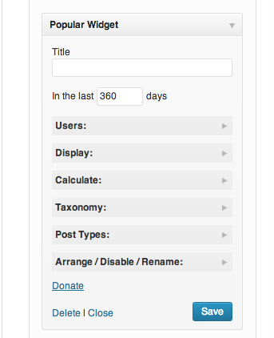
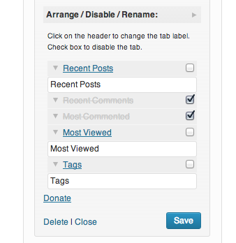
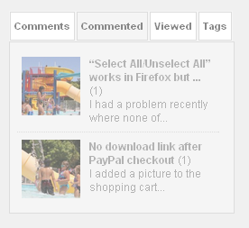
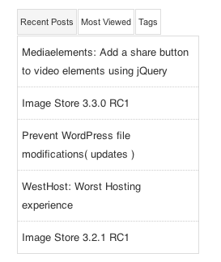
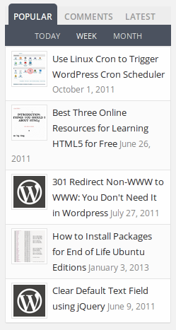

Having tabbed Widget in your WordPress blog’s sidebar not only makes it look attractive, it also has following advantages –
What are the advantages of adding tabbed Widget in WordPress Sidebar?
- Saves Space in Sidebar for other widgets and advertisement.
- Improves SEO, CTR and traffic, if configured properly.
- It makes your blog, look professional and attractive.
what you should check before choosing and tabbed widget Plugin for your blog?
- Site’s Performance: Check whether it’s affecting the website’s loading speed, if it’s making your site load slow then it’s definitely not a good choice for your blog.
- Browser compatibility: Ensure that the widget is displaying content as expected on all the popular browsers. Test you website in different-2 browsers after implementing the tabbed widget in sidebar.
5 Most popular Tabbed Widget Plugins for WordPress
1) Popular Widget
This plugin provides lots of options to customize the widget and tabs to make it suitable for your blog. Most of the options can be configured through the widget itself, which can be found in Appearance >> Widget section. Here is how it looks –

The below configuration screen allows you to arrange, disable and rename tabs in your sidebar. This is very useful when you do not want to have 3 tabs. If you are displaying corresponding tags at the end of your posts then you can disable the tags tab in the widget.

It supports thumbnails too. You can display comments, most commented post’s link, recently viewed posts and tags in your sidebar along with the attractive thumbnails.

This is how it looks in your blog’s sidebar for recent posts, most viewed articles and tags.

2) Popular Posts Tabbed Widget for Jetpack
This plugin displays popular posts, comments and latest posts by using Jetpack stats. If you do not have jetpack plugin enabled then you must need it to make this plugin work as expected. It supports thumbnails which makes the widget eye catchy and attractive.

Other Plugins to checkout –
3) Tabber Widget – You can add upto 10 tabs in a widget but the less tabs would be recommend as more number of tabs can break the frame. The only downside I see with this plugin is that it has not been updated in last few years, which would soon make it incompatible with the upcoming WordPress updates.
4) WP Tabber Widget – Maximum two tabs are allowed in this widget. You can add post’s links into them. It can be used for displaying featured and reviews posts.
5) Tabber Tabs Widget – It is very useful if you wanna add more than one widgets in the tabs. Install and activate this plugin and then drag and drop the widgets as a tab in the widget section. Quite useful when you already have widgets and just want to add them in the tabs.
Let us know which plugin you are using and which one you like the most. Also, share you thoughts via comments on this plugin list. If you believe that there is any other free plugin available, which does the same job then please let others know by saying it below.
this one is simple yet incredible plugin.. thanks for sharing it with the community
I like the popular post tab by jetpack.. it sufficient for my needs.. furthermore, it has the support i need..
can I ask you, is there any widget in wordpress for doing like this (my blogspot template) ?
http://i57.tinypic.com/2lmxrb8.png
I want to have more tabs like :
top commentators
top download (my blog is giving free script and people can download it)
commented post ( I want only posts with certain tags or category (in blogspot, we call it label) will be in the list)
viewed post ( I want only posts with certain tags or category (in blogspot, we call it label) will be in the list)
and I want the main body (i dont know hwo to call it in wp) will show only the certain tags or category article
is there widget in wp fro this needs ?
thank you
Really works
Nice collection! I use the popular widget. But the Jetpack widget also looks great
I tried jetpack plugin tabs and its not working, keeps loading and loading.